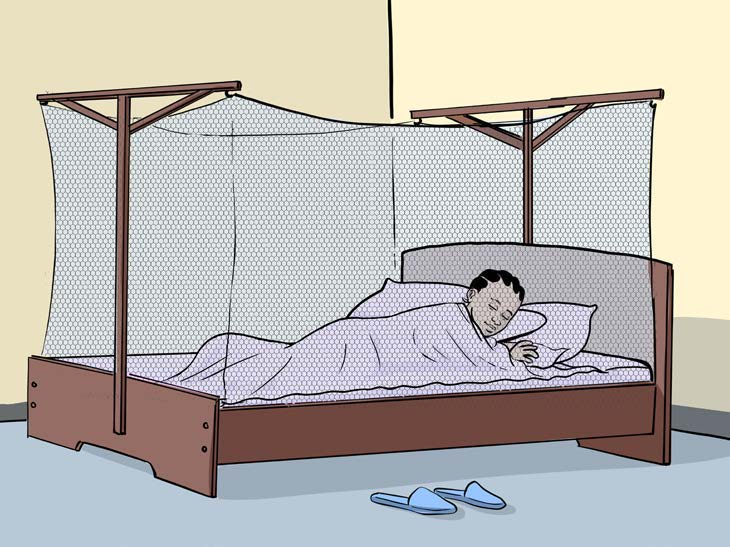

Zoezi la tano
Andika habari zifuatazo kwa kuweka alama sahihi za
uandishi mahali zinapokosekana. Pia, weka herufi kubwa
mahali zinapotakiwa.
Habari ya kwanzaTujikinge na malaria
Andika habari zifuatazo kwa kuweka alama sahihi za
uandishi mahali zinapokosekana. Pia, weka herufi kubwa
mahali zinapotakiwa.Habari ya kwanzaTujikinge na malaria

Mtoto amelala ndani ya chandarua cha kujikinga na mbu.
Malaria ni ugonjwa hatari unaoenezwa na mbu Mbu
huzaliana katika maji yaliyotuama Maji hutuama katika
madimbwi vifuu vya nazi au makopo Ili kujikinga na ugonjwa
wa malaria, ni vyema kusafisha mazingira Pia, ni vizuri
kufukia madimbwi ya maji Vilevile, tunapaswa kutumia
chandarua kila tunapokwenda kulala
Malaria ni ugonjwa hatari unaoenezwa na mbu Mbu
huzaliana katika maji yaliyotuama Maji hutuama katika
madimbwi vifuu vya nazi au makopo Ili kujikinga na ugonjwa
wa malaria, ni vyema kusafisha mazingira Pia, ni vizuri
kufukia madimbwi ya maji Vilevile, tunapaswa kutumia
chandarua kila tunapokwenda kulala
Andika upya habari ya Tujikinge na malaria kwa herufi kubwa na alama sahihi za uandishi; tumia eneo la kuandikia, kibodi au Breli.